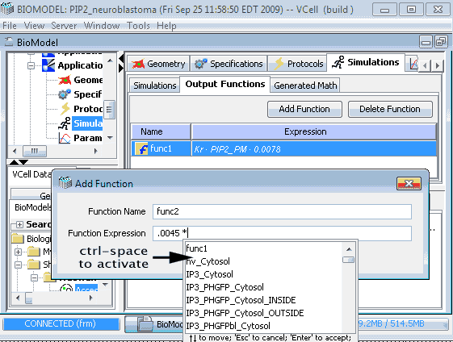

In a spatial application or math model, click "Add Function" button to add a output function.
After selecting a subdomain, editing the name and expression, click "OK" to add the function.


Output functions are user defined functions for simulation results in a biomodel application or in a math model, and they are saved with the model and available for viewing in all simulations in the containing application or math model.
Output functions are defined as vcell expressions. Symbols that can be used in the expression of a output function are:
After an output function is added, it will be automatically added to all simulation result viewers.
In spatial models, output functions are defined in a specific subdomain, either in a volume or on a membrane. This determines the function type of a output function. In subdomains where a output function is not define, Gray color will be displayed with "Undefined" as the value in results viewer.
In a spatial application or math model, click "Add Function" button to add a output function.
After selecting a subdomain, editing the name and expression, click "OK" to add the function.
Remember to save the model after a function is added or deleted.